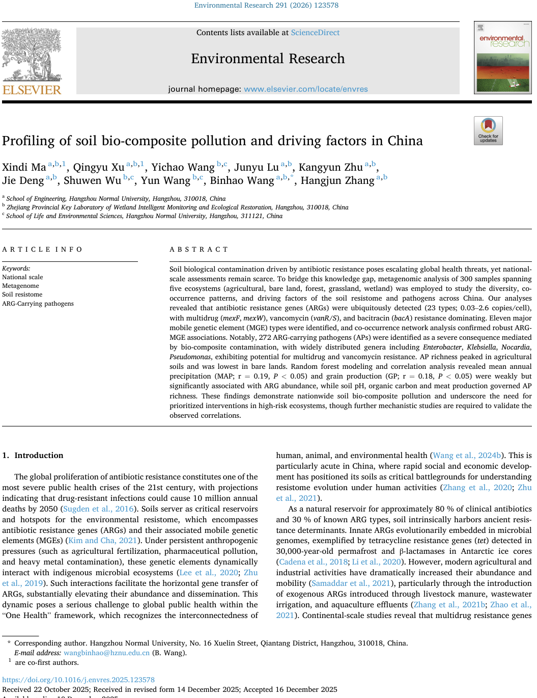
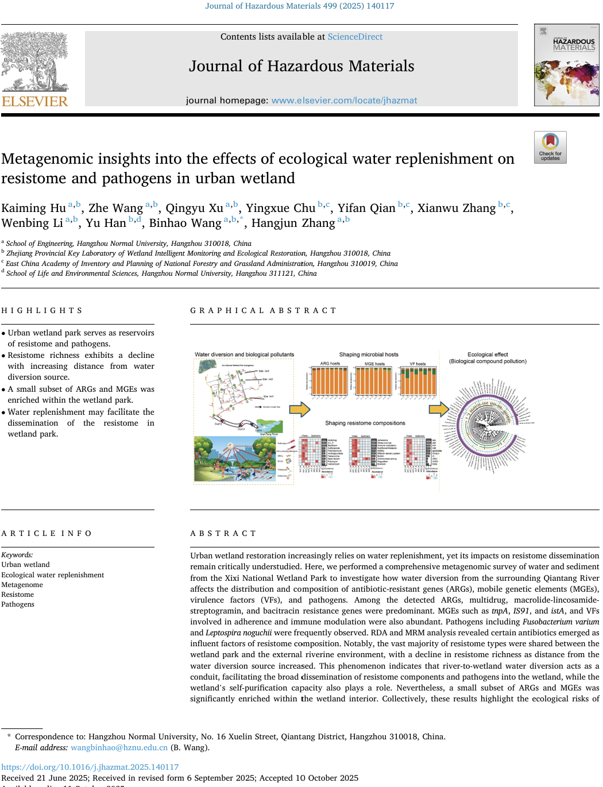
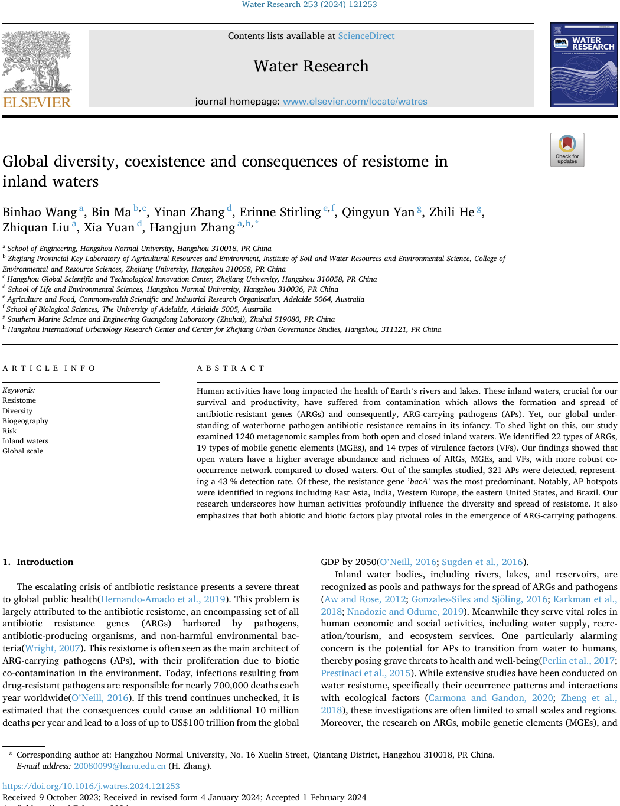
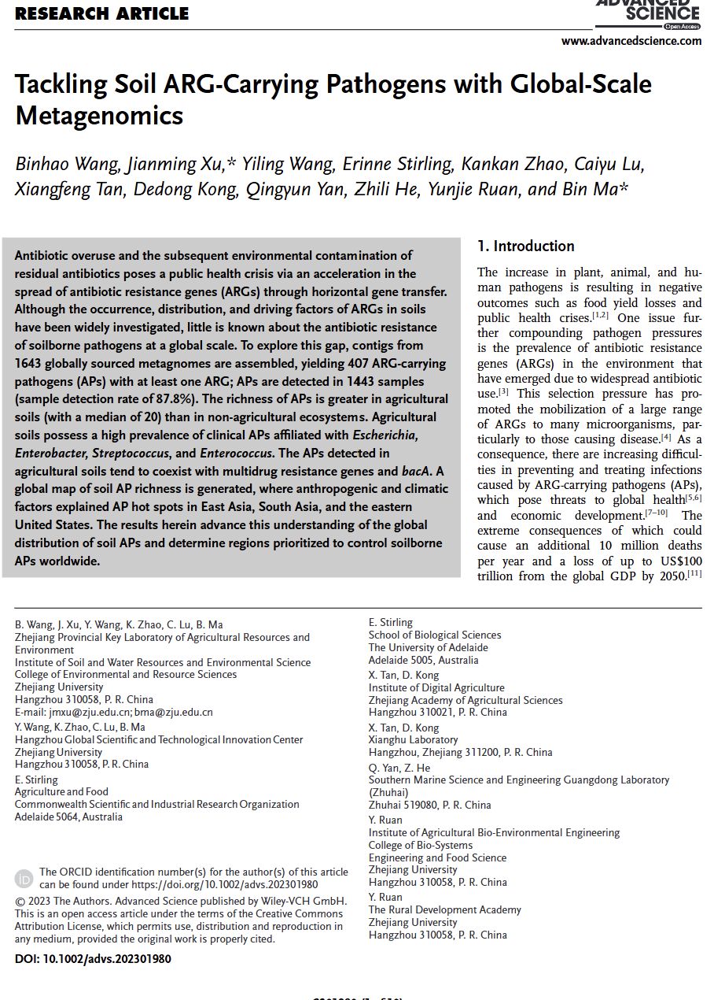
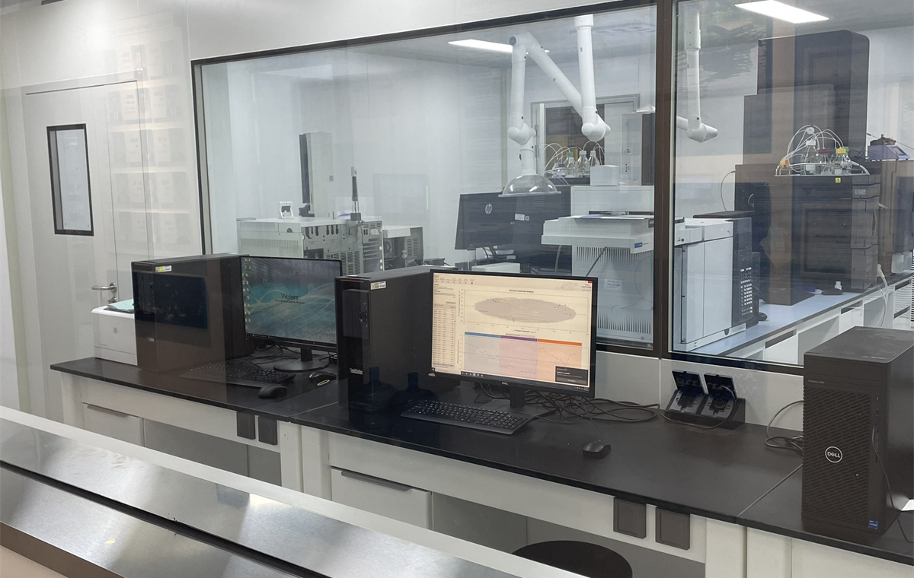

News



Profiling of soil bio-composite pollution and driving factors in China.
Xindi Ma#, Qingyu Xu#, Yichao Wang, Junyu Lu, Kangyun Zhu, Jie Deng, Shuwen Wu, Yun Wang, Binhao Wang*, Hangjun Zhang.
Metagenomic insights into the effects of water diversion on resistome and pathogens in urban wetland.
Kaiming Hu, Zhe Wang, Qingyu Xu, Yingxue Chu, Yifan Qian, Xianwu Zhang, Wenbing Li, Yu Han, Binhao Wang*, Hangjun Zhang.
Global diversity, coexistence and consequences of resistome in inland waters.
Binhao Wang, Bin Ma, Yinan Zhang, Erinne Stirling, Qingyun Yan, Zhili He, Zhiquan Liu, Xia Yuan, Hangjun Zhang*.
Tackling ARG-carrying pathogens in soils with global-scale metagenomics.
Binhao Wang, Jianming Xu*, Yiling Wang, Erinne Stirling, Kankan Zhao, Caiyu Lu, Xiangfeng Tan, Dedong Kong, Qingyun Yan, Zhili He, Yunjie Ruan, Bin Ma*.
Our Mission
Image Placeholder
- Our Mission -
- To Explore Nexus among Microbiome, Bioeconomy and Human System
- To Develop Meta-Omics and Bioinformatics Tools for Microbiome Analysis
- To Engineer Microbiome for Enhanced Biotechnology and Human Health
Resources
